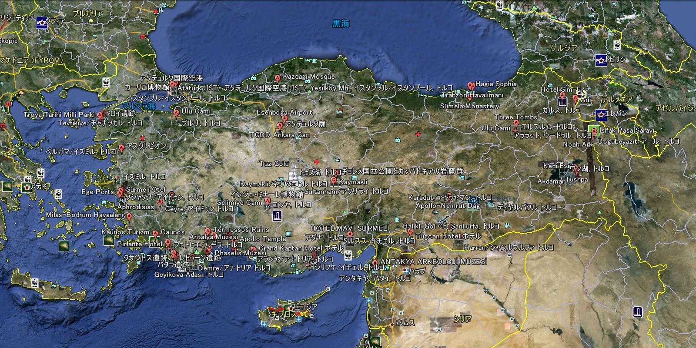

Istanbul Topkapi Palace Aya Sofia Blue Mosque Kariye Rüstem Paşa Bazaar Bridge New City Dolmabahçe Basilica Cistern Bursa Troy Bergama Asklepion Izmir Efes Kusadasi Aphrodisias Pamukkale Konya Sultanhani Ankara Tuz Cappadocia Goreme Kaymakli Bodrum Caunos Xanthos Letoon Kekova Myra Chimera Phaselis Termessos Antalya Aspendos Side Alanya Uzuncaburç Cennet Cehennem Kizkalesi Tarsus Adana Antakya Harran Urfa Nemrut Diyarbakir Van İshak Paşa Ararat Ani Erzurum Trabzon Sumela Safranbolu Lefkoşa Kyrenia Bellapais Famagusta Salamis Barnabas